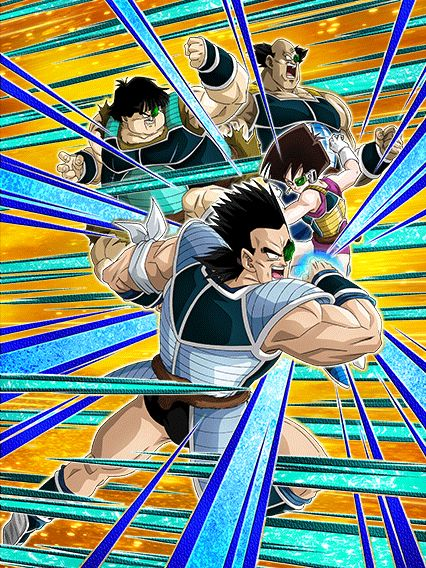
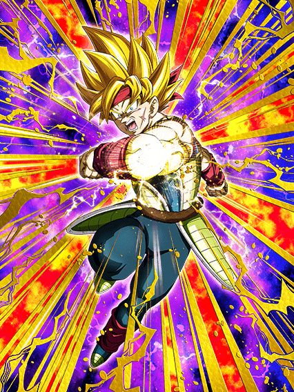
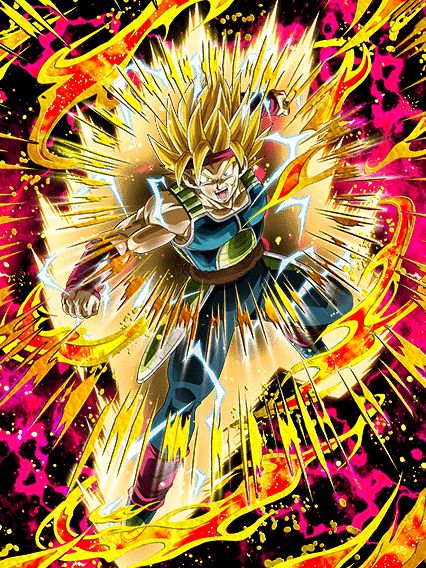
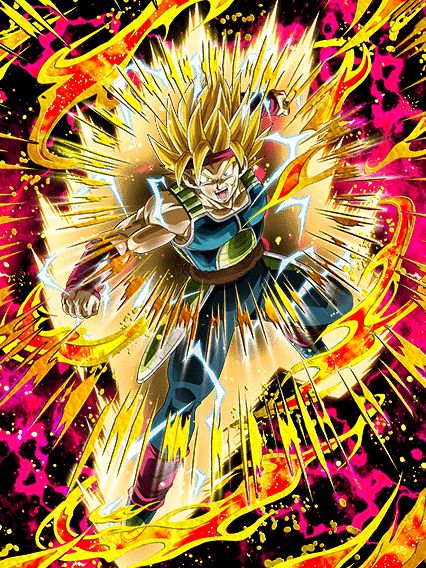
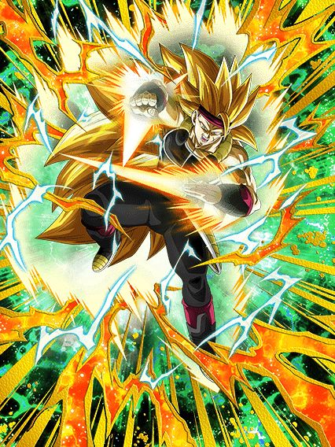

Celebração filler básica.
Literalmente uma celebração lotada de Bardocks e nada além disso, bem simples.

O lançamento com potencial que não teve potencial nenhum.💀
Lançado logo depois do gokuzinho, a esperança que esse card passou foi insana, já que além dos potenciais EZAs (incluindo é claro o grande Bardock AGL), esse card poderia ter feito algo similar ao Ginyu AGL, trazendo 2 cards secundarios do time Bardock no banner, o que faria o time usável novamente em eventos difíceis. Infelizmente, o card foi lançado com a mecânica de scouter bugada (o scouter só estava ativo em turnos onde o personagem estava presente), com um card secundário que é decente, mas não o bastante pra fazer um time funcionar e sem parte 2 na celebração.
As únicas coisas boas do card são a leader skill para qualquer Goku do jogo, as animações que são boas, e suas OSTs que também são muito bem feitas (vale mencionar que a intro do card ainda é uma das melhores do jogo).

Esse cara é maneiro.
Ele tem 30% de redução de dano, 30% de chance de desvio, 60% de ATK e DEF pra geral se tiver um bardock no time, e ele até dá um dano decente
No geral ele é o melhor parceiro pro bardock dokkan fest já que eles compartilham 6/7 links e com esse suporte, o bardock consegue se manter com uma defesa mais aceitável.

Falem oq quiser dele, mas esse cara é gente boa.
Ele é literalmente um birdku versão 0.5 que tmb é um suporte, card incrível demais
Tipo, ele não dá dano direito, mas mlk, ele consegue até ser um tank confiável, já q ele leva 1 ataque e ganha defesa ativa no turno, oq significa que sim, no primeiro golpe ele é extremamente frágil, e depois disso ele consegue tankar legal, é meio q um personagem alto risco/alta recompensa, já q o suporte é bom, ele linka decentemente com outros saiyajins e funciona em times fortes como bonde do pai e filho.
 

ehhhhh.
O bardock teq é um nuker mais ou menos, é até decente se vc pegar 8 ou mais orbs, mas isso é difícil, já q ele só muda orb str pra teq, e isso é horrível
O str precisa atacar 700 mil vezes mas se ele conseguir, ele tem uma defesa interessante, e é um suporte pra qualquer um, então é, bem ok mas podia ser melhor.

Suporte.
Esse é o personagem pra showcase de outros, ele dá 50% de ATK pra todos super class
E ele tem uma defesa minimamente decente, já que ele até dá um adicional garantido com outro power beyond super saiyan no time, mas é bom colocar desvio nesse cara pra pelo menos vc não morrer enquanto testa outro card
E hey, ele é o melhor card pra battle road de super saiyan 3.
Você chegou ao fim dessa página!
Obrigado por ler tudo, e fica a vontade pra ver outras